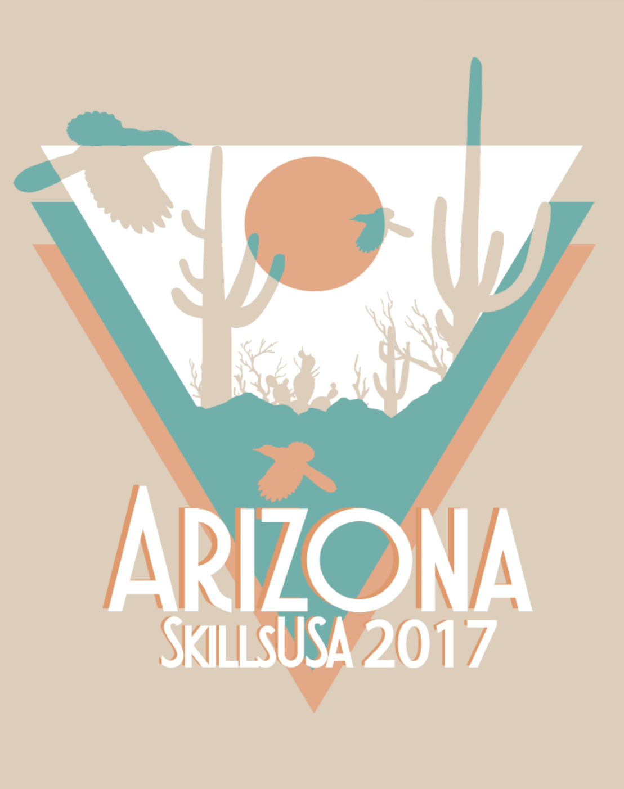

Welcome to my website! I'm a passionate developer, skilled graphic designer, and aspiring data scientist. If you have any questions or inquiries, don't hesitate to reach out. I'm thrilled to connect with you!
Download CVHello World! I'm Nour Tanbal, a developer, designer, and aspiring Data Scientist based out of Louisiana. I thrive on merging the realms of art and analysis,
leveraging my skills to create meaningful experiences and uncover valuable insights from data. From crafting captivating logos to developing innovative
programming projects that delve into user data. I continously seek opportunities to express myself through various channells, allowing me to inform and
insprire through my work.
By combining my artistic flair with analytic thinking, I have the unique ability to breathe life into data-driven narratives, effectively communicating complex
concepts in an engaging and visually appealing manner. This enables me to bridge the gap between art and sceince, sparking curiosity and facilitating a deeper understanding
of the information at hand.
I discovered my passion for graphic design back in 2015, and over the years, my artistic journey has been nothing short of exhilarating. Initially, my designs were appreciated for their simplicity and captivating appeal, but as I continued to grow and evolve as an artist, I found myself irresistibly drawn to the realm of geometric designs, exploring the creative possibilities of negative space, and drawing inspiration from the vibrant and expressive styles of the 70s.
The years 2016 and 2017 marked significant milestones in my graphic design career. During this time, I actively participated in SkillsUSA both state and national competitions. My dedication and hard work culminated in the creation and presentation of a remarkable t-shirt and pin design, each reflecting the essence of my home state, Arizona. I was incredibly honored to have achieved 4th place nationally for my outstanding pin design in 2016, and my proudest moment  came in 2017 when my innovative t-shirt design claimed the prestigious 1st place position.
Presently, my passion for graphic design continues to thrive. I derive immense joy from crafting unique and eye-catching logos for small businesses, as well as exploring various creative avenues to bring intriguing t-shirt ideas to life. Through my art, I find a powerful medium of self-expression, allowing me to communicate my thoughts, emotions, and inspirations to the world.
As I look towards the future, I am eager to further push the boundaries of my creativity, embracing new challenges and opportunities that come my way. With each project, I strive to infuse my work with a distinctive touch that captivates audiences and leaves a lasting impression. Graphic design is not just a career for me; it's an artistic journey that keeps evolving, and I am excited to see where it takes me next
During my undergraduate years, I had the privilege of attending a captivating 6pm lecture titled "Statistical Foundations in the Information Age." Little did I know that this course would spark a
profound admiration for the world of data - its intricate structure and its remarkable manipulative power. As the weeks progressed, I found myself falling head over heels in love with the enchanting
realm of data structures, algorithms, and the ever-evolving symbiosis between humans and data.
Currently, I am dedicated to honing my data science skills by pursuing a master's degree at the University of Arizona. This journey is a testament to my unwavering commitment to personal growth and my passion for unraveling
the complexities of data.